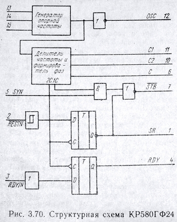
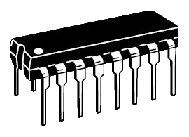
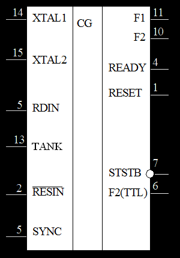
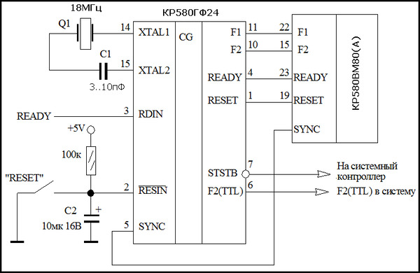
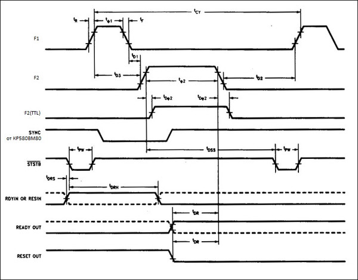

Краткое описание
В состав микросхемы КР580ГФ24 входит генератор опорной частоты, делитель частоты на девять с формирователем сигналов на выводах C1, C2, С, два D-триггера и несколько простых логических элементов.

Временная диаграмма микросхемы:
Между временными интервалами t1 и t3 – девять тактов сигнала OSC. Далее показаны состояния переключения сигналов C1, С2 и С (C2 совпадает с С). Состояние инверсного сигнала STB на выводе 7 показано при наличии логической единицы на входах 5 и 2. Состояние сигналов SR и RDY зависит соответственно от состояния на выводах 2 и 3 микросхемы, при этом момент фиксации состояния на выходах триггеров происходит по положительному перепаду внутреннего сигнала 2C (момент времени t2), спустя один такт сигнала OSC при высоком логическом уровне на выводе С2.
Подробное описание
Микросхема КР580ГФ24 -формирует тактовые импульсы частотой до 2.5мГц, амплитудой 12 В, тактовые импульсы амплитудой до 5 В для ТТЛ-схем, а также некоторые управляющие сигналы для микропроцессорной системы.
Генератор тактовых сигналов состоит из генератора опорной частоты, счетчика-делителя на 9, формирователя фаз С1, С2 и логических схем. Для работы м/с КР580ГФ24 необходимо подключение внешнего кварцевого резонатора с частотой колебаний в 9 раз больше чем частота тактовых импульсов микропроцессора.

Условное обозначение КР580ГФ24 на схеме

Назначение выводов КР580ГФ24
|
1 |
RESET |
Выход |
Сброс микропроцессора |
|
2 |
RESIN |
Вход |
Сброс |
|
3 |
RDIN |
Вход |
Готовность |
|
4 |
READY |
Выход |
Готовность |
|
5 |
SYNC |
Вход |
Вход синхронизации |
|
6 |
F2(TTL) |
Выход |
Тактовый сигнал уровня ТТЛ |
|
7 |
STSTB |
Выход |
Строб состояния |
|
8 |
Gnd |
|
Общий |
|
9 |
Uп2 |
|
Питание +12V |
|
10 |
F2 |
Выход |
Тактовый сигнал фазы 2 |
|
11 |
F1 |
Выход |
Тактовый сигнал фазы 1 |
|
12 |
OSC |
Выход |
Тактовый генератор |
|
13 |
TANK |
Вход |
Подключение колебательного контура |
|
14 |
XTAL1 |
Вход |
Кварцевый резонатор |
|
15 |
XTAL2 |
Вход |
Кварцевый резонатор |
|
16 |
Uп1 |
|
Питание +5V |
Микросхема КР580ГФ24 по входным уровням сигналов совместима с другими ИС стандартной ТТЛ логики.
Типовой кварцевый резонатор:
Описание работы м/с КР580ГФ24
Генератор КР580ГФ24 формирует:
Генератор синхронизирует сигналы RDYIN и RESIN с фазой F2.
Генератор тактовых сигналов состоит из генератора опорной частоты, счетчика-делителя на 9, формирователя фаз F1, F2 и логических схем. Для стабилизации тактовых сигналов опорной частоты ко входам XTAL1, XTAL2 генератора подключают резонатор, частота которого должна быть в 9 раз больше частоты выходных сигналов F1, F2. При частоте резонатора более 10МГц необходимо последовательно в цепи резонатора подсоединить конденсатор емкостью 3-10 пФ.
Вход TANK предназначен для подключения колебательного контура, работающего на высших гармониках резонатора, для стабилизации тактовых сигналов опорной частоты.
Тактовые сигналы, синхронные с сигналами опорной частоты, с выхода OSC используют при необходимости в микропроцессорной системе или для одновременной синхронизации нескольких генераторов.
Стробирующий сигнал состояния STSTB формируется при наличии на входе SYNC напряжения высокого уровня, поступающего с выхода микропроцессора КР580ВМ80А в начале каждого машинного цикла. Сигнал STSTB используют для занесения информации состояния микропроцессора в м/c системного контроллера КР580ВК28 или KP580BK38 для формирования управляющих сигналов.
Для согласования работы микропроцессора КР580ВМ80А с другими устройствами сигнал RDYIN синхронизируется по фазе F2 на выходе READY генератора.
Выходной сигнал RESET используют для установки в исходное состояние микропроцессора и других микросхем в системе.
Основные параметры КР580ГФ24
|
Напряжение питания (Uп1) |
+5В ±10% |
|
Напряжение питания (Uп2) |
+12В ±10%* |
|
Ток потребления Uп1 |
<115мА |
|
Ток потребления Uп2 |
<12мА |
|
Выходное напряжение низкого уровня |
<0,45В |
|
Выходное напряжение высокого уровня: |
>9,4В* |
|
Выходной ток (утечки) низкого уровня |
<250мкА |
|
Время задержки распространения F2(TTL) относительно F2 |
5..15нс |
|
Входной уровень "0" |
< 0,8В |
|
Входной уровень "1" |
> 2,0В |
|
Максимальная частота кварца |
27МГц |
|
Входная ёмкость |
<8пФ |
|
Максимальный выходной ток высокого уровня: |
1мА |
|
Максимальный выходной ток низкого уровня: |
10мА |
|
Рабочий диапазон температур |
-10oC..+70oC |
|
Корпус |
238.16-2 (DIP-16) |
|
Импортный аналог |
i8224 |
* Микросхема КР580ГФ24 сохраняет работоспособность при снижении Uп2 вплоть до +5В с пропорциональным снижением амплитуды выходных импульсов F1 и F2.
Типовая схема включения КР580ГФ24

Временная диаграмма работы КР580ГФ24
